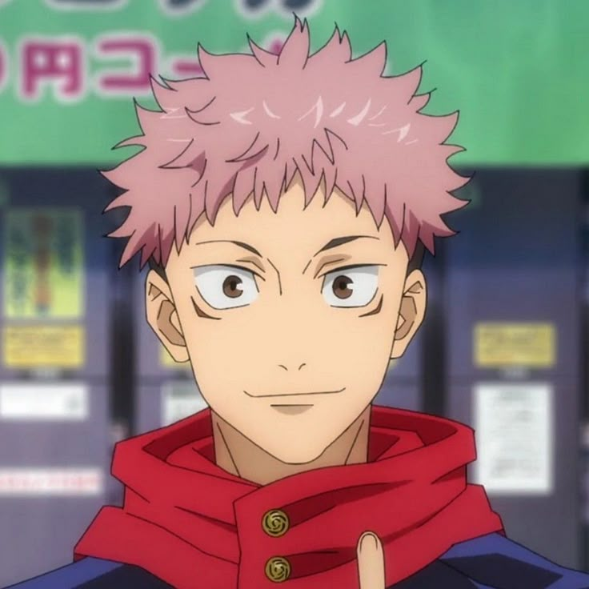
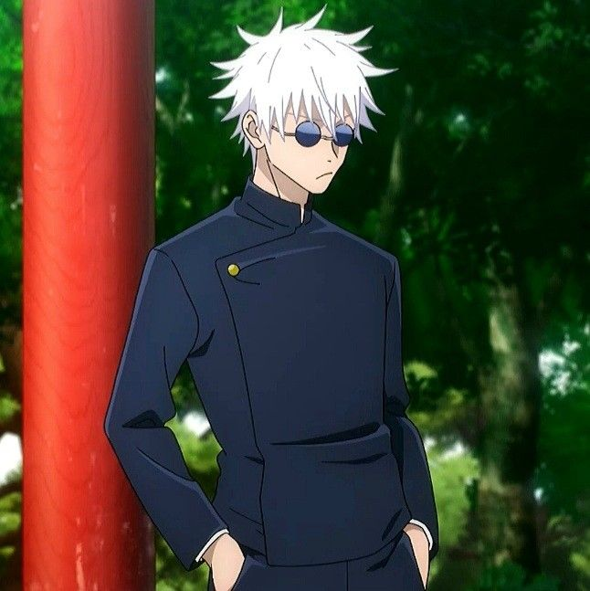

Personagens
Yuji Itadori

Yuji Itadori é o protagonista da série de mangá e anime Jujutsu Kaisen, criada por Gege Akutami. Ele se destaca por sua força física extraordinária e por se tornar o receptáculo do "Rei das Maldições", Ryomen Sukuna.
Informações básicas
- Nome: Yuji Itadori
- Idade: 15 anos (no início da história)
- Data de nascimento: 20 de março
- Ocupação: Estudante do Colégio Técnico de Jujutsu de Tóquio
- Parentesco: Criado pelo avô (Wasuke Itadori). Filho de Jin Itadori e Kaori Itadori (corpo controlado por Kenjaku). Irmão por laço de sangue de Choso e das Pinturas da Morte.
Personalidade
Yuji é amigável, carismático, empático e extremamente altruísta. Ele se guia pelo último pedido de seu avô no leito de morte: ajudar as pessoas para que, quando chegar a sua hora, ele possa morrer cercado por aqueles que ama. Ele valoriza profundamente a vida humana e o conceito de uma "morte digna".
Atributos físicos
- Força física e velocidade sobre-humanas (mesmo antes de usar energia amaldiçoada)
- Grande resistência à dor e alta durabilidade em combate
- Imunidade natural a venenos e alta tolerância a toxinas
- Aptidão física perfeita para servir de receptáculo a Sukuna sem perder o controle de seu corpo
Poderes e técnicas relevantes
- Punho Divergente (Divergent Fist): um golpe físico onde a energia amaldiçoada chega com atraso, criando um segundo impacto devastador.
- Flash Negro (Black Flash): uma distorção espacial que ocorre quando a energia amaldiçoada é aplicada em um intervalo de um milionésimo de segundo do impacto físico. Potencializa o ataque em 2,5 vezes. Yuji detém o recorde de usos consecutivos.
- Percepção da Alma: capacidade de enxergar os contornos da alma devido ao tempo em que dividiu o corpo com Sukuna. Seus golpes conseguem ferir a alma diretamente e separar corpos fundidos ou reencarnados.
- Manipulação de Sangue (Blood Manipulation): técnica herdada das Pinturas da Morte, permitindo controlar o próprio sangue para ataques de longo alcance (como o Piercing Blood) e reforço físico.
- Santuário (Shrine): versão própria da técnica de Sukuna, que permite desferir cortes precisos (como o Dismantle) em seus alvos.
- Técnica Amaldiçoada Reversa (RCT): capacidade de converter energia negativa em positiva para curar ferimentos graves e regenerar membros em pleno combate.
- Domínio Simples (Simple Domain): técnica de barreira defensiva usada para neutralizar o acerto garantido de Expansões de Domínio inimigas.
- Expansão de Domínio: habilidade suprema manifestada na reta final da história, que reflete sua própria essência e coloca o oponente sob as regras de seu território amaldiçoado.
Megumi Fushiguro

Megumi Fushiguro é um dos protagonistas da série de mangá e anime Jujutsu Kaisen, criada por Gege Akutami. Ele é um feiticeiro de Grau 2 no início da história e um estudante do primeiro ano do Colégio Técnico de Jujutsu de Tóquio, atuando ao lado de Yuji Itadori e Nobara Kugisaki.
Informações básicas
- Nome: Megumi Fushiguro
- Idade: 15 anos (no início da história)
- Data de nascimento: 22 de dezembro
- Ocupação: Estudante e Feiticeiro Jujutsu
- Parentesco: Filho de Toji Fushiguro (antigo membro do clã Zenin). Meio-irmão de Tsumiki Fushiguro. Foi adotado e protegido por Satoru Gojo após os eventos da morte de seu pai.
Personalidade
Megumi é calculista, reservado, sério e pragmático. Ao contrário de Yuji, ele não acredita que todas as vidas devem ser salvas igualmente; ele escolhe proteger pessoas boas e justas, deixando que os criminosos e pessoas ruins sofram as consequências de seus atos. Ele possui uma tendência ao autossacrifício quando se vê sem opções em combate.
Atributos Fisicos
- Inteligência Tática: é um dos feiticeiros mais estratégicos de sua geração, capaz de analisar rapidamente o fluxo de energia e as técnicas dos oponentes.
- Combate Corpo a Corpo: diferente de muitos usuários de Shikigami tradicionais que lutam à distância, Megumi usa artes marciais avançadas e armas amaldiçoadas em conjunto com suas invocações.
- Receptáculo de Sukuna: durante os eventos mais avançados da história, seu corpo e alma tornam-se o hospedeiro principal de Ryomen Sukuna, servindo como peça central nos planos do Rei das Maldições.
Poderes e técnicas relevantes
- Técnica das Dez Sombras (Ten Shadows Technique): técnica hereditária e extremamente valiosa do prestigiado Clã Zenin. Permite a Megumi criar e controlar até 10 Shikigamis diferentes usando as sombras como intermediárias.
- Cães Divinos (Divine Dogs): lobos usados para rastreamento e combate. Após a morte do cão branco, os poderes se fundiram no "Cão Divino: Total".
- Nue: uma criatura alada semelhante a uma coruja que desfere ataques elétricos e possui alta mobilidade aérea.
- Sapo (Toad): anfíbios gigantes usados para imobilizar inimigos ou resgatar aliados com a língua.
- Serpente Grande (Great Serpent): uma serpente gigante usada para ataques surpresa no subsolo (destruída por Sukuna).
- Elefante Máximo (Max Elephant): um elefante massivo capaz de disparar jorros de água pressurizada e esmagar oponentes.
- Coelho de Fuga (Escape Rabbit): uma enorme horda de coelhos usada como distração, camuflagem ou cobertura para fuga.
- General Divino Mahoraga (Eight-Handled Sword Divergent Sila Divine General Mahoraga): o Shikigami mais poderoso e incontrolável da técnica. Possui a habilidade única de se adaptar a absolutamente qualquer fenômeno ou ataque após ser atingido uma vez. Historicamente, nenhum usuário das Dez Sombras havia conseguido domesticá-lo antes de Sukuna assumir o corpo de Megumi.
- Armazenamento nas Sombras: Megumi pode esconder objetos, armas amaldiçoadas e até a si mesmo dentro do espaço físico de suas próprias sombras.
- Expansão de Domínio - Jardim das Sombras Quimeras (Chimera Shadow Garden): um domínio incompleto, mas altamente eficaz, que inunda a área ao redor com sombras fluidas. Permite a Megumi invocar múltiplos Shikigamis sem restrições, criar clones de si mesmo a partir das sombras e atacar os pontos cegos do inimigo.
Satoro Gojo

Satoru Gojo é o professor dos alunos do primeiro ano e é considerado o feiticeiro mais forte da atualidade. Herdeiro do prestigiado Clã Gojo, ele é um feiticeiro de Grau Especial e a principal razão pela qual Yuji Itadori ainda está vivo no início da história.
Informações Basicas
- Nome: Satoro Gojo
- Idade: 28 Anos (No inicio da Historia)
- Data de Nascimento: 7 de Dezembro
- Ocupação: Professor e Feiticeiro Jujutsu de Grau Especial
- Parentesco: Herdeiro do Clã Gojo. Responsável por Megumi Fushiguro e Tsumiki Fushiguro após a morte de Toji.
Personalidade
Gojo é confiante, brincalhão e descontraído, muitas vezes agindo de forma arrogante por saber que é o mais forte. Por trás do jeito leve, ele é muito leal aos seus alunos e tem um objetivo sério: formar uma nova geração de feiticeiros fortes para mudar o mundo jujutsu e acabar com a estrutura apodrecida das velhas lideranças
Atributos Fisicos
- Olhos azuis chamados de Seis Olhos, que enxergam a energia amaldiçoada em detalhes mínimos
- Controle de energia amaldiçoada quase perfeito, com gasto mínimo de energia
- Cabelos brancos e altura de cerca de 1,90 m, quase sempre com uma venda ou óculos escuros
- Alta capacidade de combate corpo a corpo, além das técnicas amaldiçoadas
Poderes e Tecnicas Relevantes
- Seis Olhos (Six Eyes): Habilidade hereditária que permite perceber a energia amaldiçoada com precisão extrema e usar o Infinito sem desgaste.
- Infinito (Limitless): técnica que manipula o espaço e faz com que qualquer coisa se aproxime dele sem nunca tocá-lo, tornando-o praticamente intocável.
- Azul (Cursed Technique Lapse: Blue): gera uma força de atração que puxa tudo para um ponto.
- Vermelho (Cursed Technique Reversal: Red): gera uma força de repulsão que afasta tudo com grande impacto.
- Roxo (Hollow Purple): combina Azul e Vermelho em um ataque devastador que apaga tudo em seu caminho.
- Técnica Amaldiçoada Reversa (RCT):permite a Gojo curar ferimentos e regenerar o próprio corpo.
- Expansão de Domínio - Vazio Imensurável (Unlimited Void): o oponente é preso em um espaço de informação infinita, o que o deixa paralisado e incapaz de agir.
Nobara Kugisaki

Nobara Kugisaki é uma das protagonistas de Jujutsu Kaisen. Ela é uma feiticeira de Grau 3 no início da história e estudante do primeiro ano do Colégio Técnico de Jujutsu de Tóquio, formando o trio principal ao lado de Yuji Itadori e Megumi Fushiguro
Informações Basicas
- Nome: Nobara Kugisaki
- Idade: 15 anos (no início da história)
- Data de nascimento: 7 de agosto
- Ocupação: Estudante e Feiticeira Jujutsu
- Parentesco: Criada pela avó em uma pequena cidade do interior (Morioka). Muito próxima da amiga de infância, Saori.
Personalidade
Nobara é confiante, direta, orgulhosa e de personalidade forte. Ela se veste e age do jeito que quer, sem se importar com a opinião dos outros. Ela veio para Tóquio por querer viver uma vida mais livre e vive para ser ela mesma. Apesar do temperamento explosivo, é muito leal aos amigos.
Atributos e Estilo de Combate
- Combate à distância e de média distância: usa pregos, martelo e bonecas de palha como armas principais.
- Coragem e determinação: enfrenta qualquer inimigo sem recuar, mesmo em desvantagem.
- Boa mira e precisão: acerta alvos em movimento usando o martelo e os pregos com grande habilidade.
Poderes e Tecnicas Relevantes
- Técnica da Ressonância (Resonance): técnica amaldiçoada que permite causar dano ao corpo do alvo através de um pedaço dele (como cabelo ou sangue) preso à boneca de palha.
- Técnica da Boneca de Palha (Straw Doll Technique): ela crava um prego na boneca com o martelo, transmitindo o impacto ao alvo à distância.
- Grampo (Hairpin): ela arremessa um prego carregado com energia amaldiçoada e o detona à distância com a Ressonância, causando uma explosão.
- Pregos e Martelo: armas amaldiçoadas usadas tanto em ataques diretos quanto como base de suas técnicas.